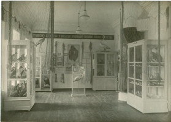
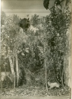
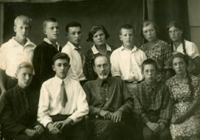
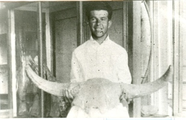
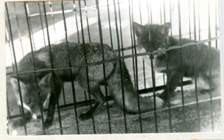

ИСТОРИЯ
ОТДЕЛА
ПРИРОДЫ
В 1930-е гг., в эпоху индустриализации, отдел назывался «Сектором природы и производительных сил». Заведующим сектором был А.А. Киреев.Особое внимание в экспозиции уделялось характеристике природных ресурсов края. Человек представлялся покорителем природы, потребителем её богатств. В отделе были представлены коллекции полезных ископаемых, технических растений, пушно-мехового сырья. Экспонировались модель буровой вышки с полным набором бурового инструмента и макет забоя Савельевского сланцевого рудника. В экспозиции рассказывалось о торфяных богатствах края, перспективах рыболовства и рыбоводства. Появились первые диорамы без стёкол, так называемые «панорамы», изображавшие различные уголки природы.Проводилась разносторонняя работа со школьниками, работали кружки. Организатором и руководителем кружка юных геологов был А.А. Кротков, заведующий отделом в 1936-1938 гг. В 1938 г. он выезжал с кружковцами в экспедицию в окрестности с. Жирное Сталинградской области (ныне г. Жирновск). Привезённые находки - геологические и палеонтологические были выставлены в отделе природы. Для привлечения самых юных посетителей был создан живой уголок.
|  |
 |
 |
| Фрагмент экспозиции отдела природы (сектор природы и производительных сил). Фото 1932 г. |
Уголок леса в отделе природы. Фото 1932 г. |
А.А. Кротков с членами геологического кружка. Фото 1936 г. |
|  |
 |
| Н.В. Щепотьев, заведующий отделом природы в 1941-1947 гг. Фото нач. 1940 гг. |
Лисята в живом уголке отдела природы. |